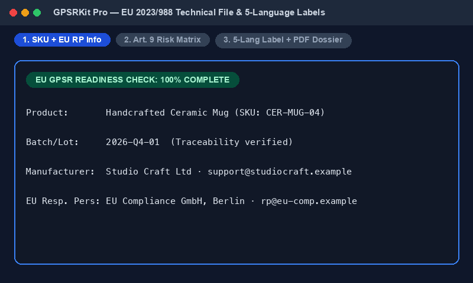

Generate Ready-to-Paste EU GPSR Safety & Responsible Person Blocks for Amazon, Etsy & Shopify
Amazon Seller Central, Etsy, and Shopify each require structured Manufacturer, EU Responsible Person, and product safety disclosures on every EU-visible listing — missing fields trigger automated listing suppression.
Key Compliance Capabilities
- Outputs platform-specific copy blocks tailored for Amazon Seller Central GPSR, Etsy safety sections, and HTML-escaped Shopify product tabs.
- Keeps your online storefront disclosures 100% consistent with your physical 5-language package label and archived Article 9 Technical File.
- Built-in presets for Ceramic/Kitchen, Wooden/Stationery Crafts, Apparel, Jewelry, Toys, and USB Electronics.
- Save Manufacturer and EU Responsible Person profiles locally in browser storage so new SKUs take under 60 seconds.
One Form -> Three Consistent Compliance Outputs
1. Article 9 Technical File (HTML Print-to-PDF + JSON 10-year archive)
2. 50×30mm Thermal & A4 5-Language Physical Product Safety Label
3. Amazon Seller Central / Etsy / Shopify Copy-Paste Compliance Blocks5-Second Walkthrough

Use code STARTER20 at Gumroad checkout for 20% off your one-time lifetime Pro license (zero monthly SaaS fees).
Frequently Asked Questions
Why must my online listing match my physical package label?
EU GPSR Article 19 mandates that distance/online offers display the same Manufacturer, EU Responsible Person, product identifier, and safety warnings required on the physical product or packaging.
Does GPSRKit connect to my Amazon Seller Central account via API?
No — it runs 100% offline in your browser so you never grant third-party OAuth access to your store account.
Can I process 50 Etsy or Amazon SKUs at once?
Yes — Pro Batch CSV mode imports your SKU spreadsheet and exports a clean ZIP containing Technical Files, Label Sheets, and Marketplace Copy for every SKU.
Is there any recurring fee?
No. One-time $29 lifetime license with offline activation.